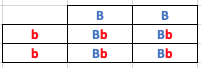
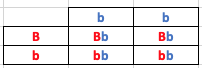
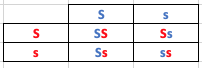
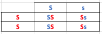

Probabilidades en genética cualitativa
Este proyecto no pretende de ninguna manera convertirse en un curso de genética, ni epidmología ni ninguna otra rama de la MVZ. Lo que se busca es mirar la aplicabilidad de las diferentes herramientas que tenemos a nuestro alcance para tomar decisiones, para este caso las probabilidades. En este último capítulo de probabilidades vamos a revisar un poquito de genética cuantitativa para aplicar las probabilidades. El material se ha adaptado de Understanding Genetics and the Sire Summaries. Recordemos que los genes cualitativos son aquellos que son controlados por un par de genes donde un genotipo determinado resultara en el mismo fenotipo cada vez. Como ejemplo de ellos en ganado tenemos el sexo, el color del manto y la expresión de los cuernos.
Los alelos que son las variantes del gene que se heredan van a determinar el fenotipo. En los cualitativos se hereda un alelo por cada padre. En los casos cualitativos (cuernos, manto), son etiquetados como dominantes o recesivos. Los caracteres dominantes serán expresados cuando al menos una versión del alelo dominante está presente. Recordemos que los alelos dominantes se expresan siempre en mayúscula y los recesivos en minúscula. Los animales heterocitos para genes recesivos suelen ser llamados "portadores" porque aunque no manifiestan el gen, sí lo portan y pueden transmitirlo a su camada. Entonces cuando se emparejan los alelos en un genotipo podemos tener:
Homocigoto dominante: ambos alelos fueron heredados en su forma dominante "AA".
Homocigoto recesivo: ambos alelos fueron heredados en su forma recesiva "aa".
Heterocigoto: un alelo dominante fué heredado de un padre y un recesivo del otro "Aa".
La forma de cuantificar las probabilidades de las combinaciones geneticas dos individuos que se aparean, se pueden determinar por medio del cuadro de Punnett (ver recuadro inferior). En el eje horizontal se lista la combinacion de genes del padre, y a la izquierda los de la madre. Se combina un valor de cada padre en la casilla correspondiente y mirando los resultados se calcula la probabilidad que tienen las crías de expresar el caracter en estudio.
Un ejemplo sencillo es utilizar los colores del manto del ganado Holstein. Tenemos homogoto dominante para manto negro BB, Heterocigoto para manto negro (portador rojo) Bb y homocigoto recesivo para manto rojo bb. Si cruzamos dos animales homocigotos un Macho negro BB con hembra roja Bb y miramos el cuadro de Punnet los resultados serían.

- Donde probabilidad de que todos los animales sean fenotipicamente negros = 2/4 + 2/4 = 4/4 = 100%
- Probabilidad de que hayan animales portadores de rojo? 2/4 = 50%
Si una de las hembras heterocigotas portadoras de rojo son cruzadas con un toro rojo (homocigoto recesivo) cual es la probabilidad de que las crias expresen esta característica?

- Donde podemos ver en el gráfico que la probabilidad de que tener animales expresando el manto rojo es de 2/4 = 50% y animales portadores del gen recesivo = 2/4 + 2/4 = 100%.
Un segundo ejemplo que podemos utilizar, es analizar alteraciones genéticas a nivel de un solo gen como el Pie de Mula o Sindactilia. Si utilizamos un toro portador de esta malformación, en un lote de hembras de las cuales el 12% de las mismas tambien son portadoras de la misma condición, 1- cuál es la probabilidad que tienen las crias de este lote de expresar la condición?. 2- Que porcentaje de las crias tienen la probabilidad de portar el gen de la sindactilia?
Cuadro de Punnett, Toro heterecigoto (portador) x vaca heterocigota (portadora)

Probabilidad de nacimientos homocigotos (SS)= 1/4 = 25%. Probabilidad de animales portadores (Ss) = 2/4 = 50%. Probabilidad de animales homocigotos recesivos (condición sindactilia ss) = 1/4 =25%. Porcentaje de hembras portadoras del gen recesivo para sindactilia: 12%. Probabilidad del total de las crias que pueden expresar la condición sindactilia+ 0.12 * 0.25 = 0.03 = 3%. Existe un 3% de probabilidad de que si usamos ese toro en esa población de vacas, las crias van a expresar el gen.
Cuadro de Punnett, Toro heterecigoto (portador) x vaca homocigota (no portadora)

Probabilidad de animales homocigotos dominantes= 2/4 = 50%. Probabilidad de animales heterocigotos = 2/4 = 50%. Porcentaje de la población de vacas no portadoras (dominantes)= 100% - 12% (portadoras) = 88% de las vacas. Entonces 50% de animales portadores * 88% de la poblacion = 44%. Ojo nos falta sumar la probablidad de crias portadoras dentro de las vacas heterocigotas que eran el 12%. Entonces si vamos al primer cuadro vemos que estas tambien tiene nel 50% de probabilidad de portar el gen. Asi tenemos que 50% * 12% = 6%. Ahora si sumamos las probalidades para los dos grupos: 44% + 6% = 50%. De esta manera si utilizamos ese toro para esa población de vacas, hay una probabilidad de que el 50% de las crias de la primera generación sean portadoras para el gen de la sindactilia y el 3% exprese la condición. Hoy en día que se puede genotipificar, es mejor buscar animales que sean libres de esta condición, nos va a ahorrar un serio dolor de cabeza.